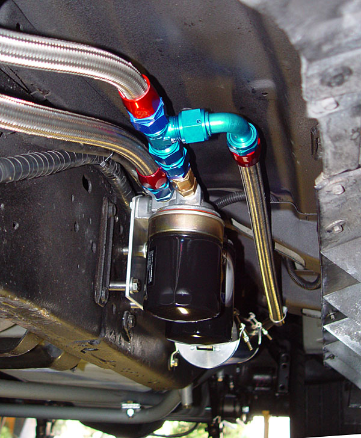
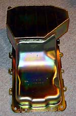
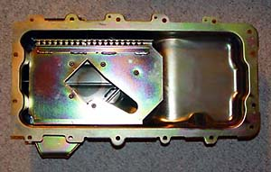
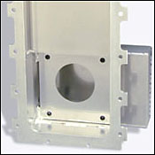
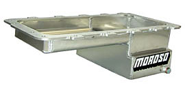
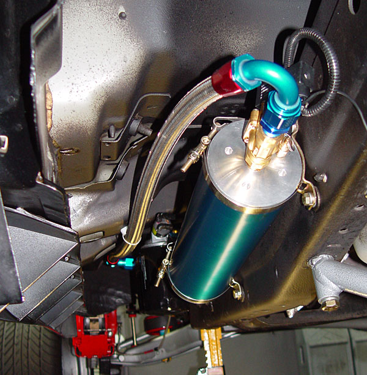
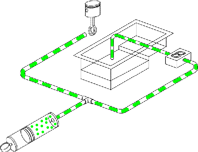
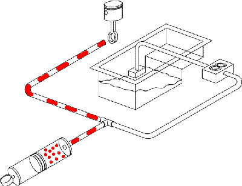
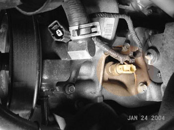
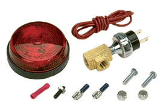

|
Oil System Improvements |
|
The objective is simple -- give the
engine clean and cool oil at all times. This page presents some
modifications to the 5.4 oiling system which can help meet these
objectives.
But what oil? Synthetics provide for longer oil change intervals (their primary benefit). Synthetics can provide for slightly more HP (usually less than 1%). Synthetics hold viscosity better in temperature extremes than conventional oils. But, do they really protect better? Depends. It has been conclusively proven that any decent quality conventional oil will protect an engine just fine if changed at 3,000 intervals. But synthetics do protect better if the oil change goes a little long and in temperature extremes. But, what synthetic? Who cares. Just pick one -- they are all about the same. I use Mobil 1 just because it is an industry standard and it is available at a reasonable price anywhere. But I would happily pour in Royal Purple, Red Line, or any other synthetic. |
|
The stock Lightning's stock oil-to-water cooler is quite effective (the soup can-sized canister located just above the filter). An auxiliary oil cooler, however, is cheap insurance. Since there is no external cooler, the only way to tap into the oil supply is at the filter, using either a sandwich adapter or remote filter adapter. With remote filters, the oil flow path is engine -> remote filters -> thermostat (optional) -> auxiliary cooler -> engine. Without remote filters, the oil flow path is engine -> thermostat (optional) -> auxiliary cooler -> engine. Stan Martin ditched the stock cooler and relies solely on an external oil-to-air cooler. His theory is that, under extreme conditions, the oil heats the water -- just before the water goes into the engine. Stan reports a 10 degree drop in water temperatures. But remember that Stan runs his truck harder and longer than anyone else. Also note that oil can be overcooled. It needs to reach 180-200 to be able to burn off water and other contaminants. |
|
I installed a Perma-Cool twin-filter remote oil filter mount (part # 10795). The filters are run in parallel for double the filtration with less pressure drop across the filter -- made even less using the full-height filters shown above. Using -12AN lines, it also adds over a quart to the oil capacity. Installation notes and photos are here. |
|
Like the transmission, the engine will benefit
(at least to some extent) from an increased
capacity oil pan. The 5.4
road racing pan from
Canton offers better fluid control, less chance of oil
starvation under extreme lateral g's, and slightly increased capacity (7 qts. versus the stock 6).
The basic 4.6/5.4 pan (part #
15-780) has a baffle
system to keep the oil in the bottom of the sump. It appears
that Canton takes a stock pan and just welds on the sump area.
The road racing pan (part # 15-784) adds four spring-loaded trap doors to contain the oil in the bottom of the sump under hard g's |
|
 Unless you autocross or run open track events, these pans are probably a waste of money. Ford, however, used the 15-780 from the factory on the Cobra R, so there must be some benefit in high performance applications. The pan can apparently be installed with the engine in the truck, but the oil filter will no longer fit, so a remote mount oil filter is required. It appears that the engine will have to be raised slightly for the pan swap, requiring access to an engine crane (or a shop which has one). |
|
|
|
Moroso also has a road racing pan for the Lightning (part # 20554). Unlike the Canton pan, Moroso make theirs from scratch with a billet rail. The Moroso pan has baffles, but no trap doors. Moroso also makes a drag racing pan that is reportedly easier to install. |
| he pan can apparently be installed with the engine in the truck, but the oil filter will no longer fit, so a remote mount oil filter is required. It appea |
| I opted for an Accusump over a racing oil pan. Not only will it prevent oil starvation under hard cornering, but it also acts as a preluber, supplying oil pressure as soon as the ignition is switched on |
|

When the engine is running, the Accusump gets charged. |
|
When the oil pressure drops, the Accusump releases up to 3 quarts of oil into the system to keep the bearings lubed. According to a poll I took on the Lightning boards, the proper E.P.C. electric switch is part number 24-273 (opens at 35-40 PSI). Cheaper on-off electric and manual valves are also available. As Canton states: "The refill rates on the electric valves are suitable and recommended for Street and Drag Strip use. On Circle Track and Road Course applications where quick refill rates are required, we recommend our E.P.C valve or our manual valve." Installation notes here. |
|
stock pressure sender location: |
| The stock oil pressure sender (which is really just a switch) is located near the power steering pump. For aftermarket gauge senders, you can install a brass tee fitting. |
|
oil pressure warning light: |
|
Moroso
makes an inexpensive 2.5"
oil pressure warning lamp (part # 49500). It comes preset at 15 PSIG, but is adjustable from
15-50 PSIG. I have it hooked up to an ultra-bright LED in
my
gauge pod.
|